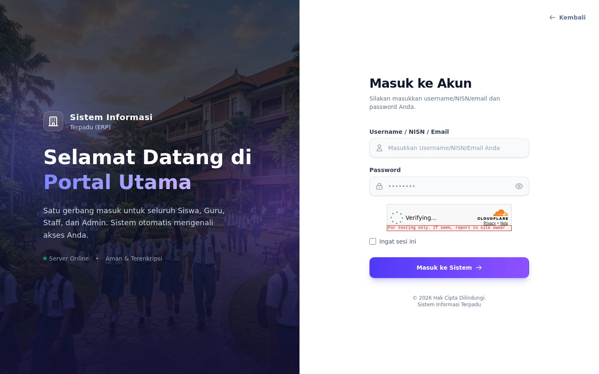
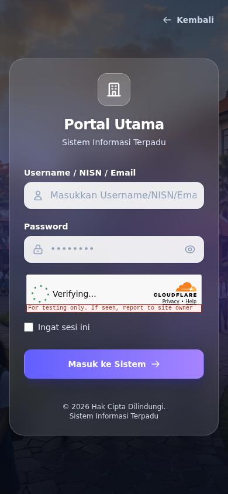

Bab 00 • Pendahuluan
/login → /pilih-portal
Login Terpadu & Layar Pilih Portal
1. Masuk ke Sistem melalui Halaman Login
Semua pengguna (Super Admin, Admin Modul, Guru, Petugas Presensi, Pustakawan, dan Siswa) masuk melalui satu pintu yang sama di /login.
- Buka alamat sistem sekolah (contoh:
http://10.66.66.14:8001/login). - Isi kolom Username / NISN / Email dengan Email akun, NIP (Guru), atau NISN (Siswa).
- Masukkan Password Anda, centang Ingat sesi ini bila perlu, lalu selesaikan verifikasi keamanan (widget Turnstile / hitungan).
- Klik tombol Masuk ke Sistem.
Halaman Login — Tampilan WebDesktop 1440×900

Halaman Login — Tampilan HPMobile 390×844

2. Memilih Portal Kerja di Layar Pilih Portal
Jika akun memiliki lebih dari satu hak akses (misalnya Super Admin atau Guru yang juga mengelola portal lain), sistem menampilkan layar Pilih Portal di /pilih-portal.
- Beranda (/) selalu berada di kartu pertama untuk membuka website publik sekolah.
- Portal Setup & Instalasi (/portal-setup) dipakai saat awal instalasi atau pergantian tahun ajaran.
- Keluar mengakhiri sesi login pengguna.
Status Terkunci Sebelum Setup: Sebelum Nama Sekolah dan Alamat Sekolah disimpan di Portal Setup, kartu portal operasional (Akademik, Presensi, Guru, Perpustakaan, Web) tampil berlabel Terkunci.
Layar Pilih Portal — Tampilan WebDesktop

Layar Pilih Portal — Tampilan HPMobile